Git is a distributed version control system that tracks changes in any set of computer files, usually used for coordinating work among programmers who are collaboratively developing source code during software development. Git's goals include speed, data integrity, and support for distributed, non-linear workflows.
A version Control System is a distributed version control system that tracks changes in any set of computer files, usually used for coordinating work among programmers who are collaboratively developing source code during software development. Git's goals include speed, data integrity, and support for distributed, non-linear workflows.
Other version control systems like Git are:
Reasons for Focus on git and Github:
Check whether Git is installed in your machine.To do so run the command:
git --version
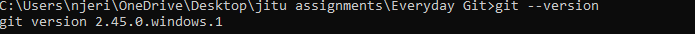Checking whether Git is installed in your System
If Git is not installed yet,proceed to download and install Git.
The download will start automatically.
Configure your username and email address using the following commands:
git config --global user.name "your name"
git config --global user.email "your email address"
on your command prompt
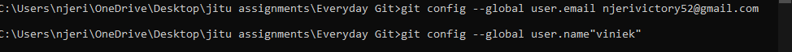
Configuring your name and email address
A Git repository is a central storage location for managing and tracking changes in files and directories. It is a crucial component of the Git version control system, which enables collaborative development and allows multiple developers to work on a project simultaneously. Git repositories are widely used in software development, where they facilitate efficient and controlled code management
Run the command:
git init
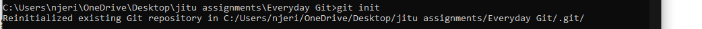
Initializing a git repository
A staging area is a file, generally contained in your Git directory, that stores information about what will go into your next commit.
Process of adding files to the staging area
git status
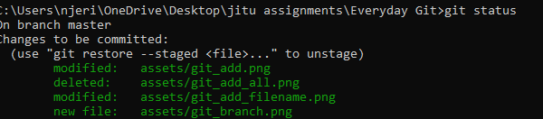
Checking status of the git repository
-For individual files, run
git add filename
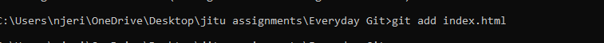
Adding individual files to staging area
-For all files in the current repository, run the command:
git add .
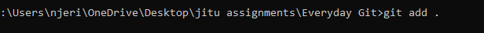
Adding all files in the Current repository
-For all files in the entire repository,run the command:
git add --all
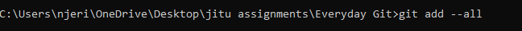
Adding all files in the entire repository
git status
Confirming that files have been staged
Once you've added all the desired changes to the staging area, you can commit them to the repository.
Use the command:
git commit -m "your commit message"
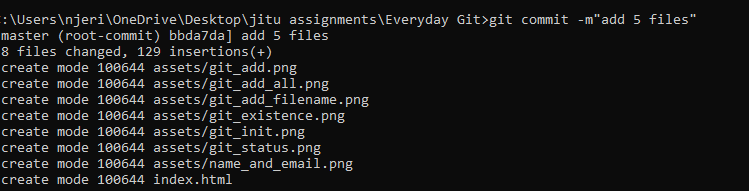
Commiting changes to the repository
How to write good commit messages
1.Aim for concise commit messages that are no longer than 50-72 characters for the subject line.
2.Separate Subject and Body: If your commit message requires more explanation, separate the subject line from the body with a blank line.
3.Be Specific: Provide specific details about the changes you've made, including any relevant context or reasoning behind the change.
4.Use Present Tense for Subject Line, Past Tense for Body: Start the subject line with a present-tense verb
How to view past commits
Run the command:
git log
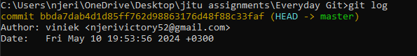
How to view past commits
how to go back to a particular commit.
Run the command:
git log -p
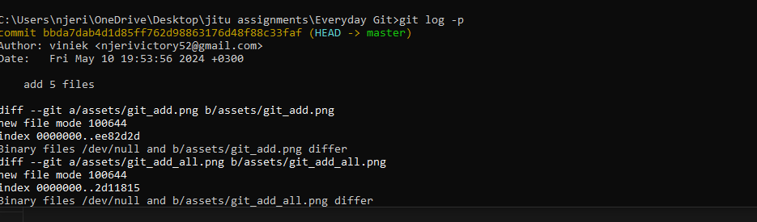
how to go back to a particular commit
In Git, branches are essentially pointers to a specific commit in the repository's history. They allow developers to work on different features, fixes, or versions of their code simultaneously without affecting the main or other branches.
1.Isolation of Work:Branches allow developers to isolate their work on different features, bug fixes, or experiments.
2.Feature Development: Feature branches provide a structured way to develop new features or enhancements.
3.Release Management: Branches play a crucial role in release management. Release branches can be created to stabilize and prepare the codebase for a new release.
4.Code Reviews and Testing: Branches facilitate code reviews and testing processes. Pull requests or merge requests are typically used to propose changes from one branch to another, allowing team members to review code, provide feedback, and ensure the quality of changes before they are merged into the main codebase.
To create a new branch in Git,run the command:
git branch 'new branch name'
Creating a new branch
To view all branches in the repository, you can run the
git branch
without any arguments:
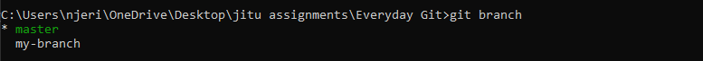
How to know which branch is the active branch
View the active branch by running the command
git branch
To switch to a different branch, you can use the git checkout command followed by the name of the branch you want to switch to.
Run the command:
git checkout"branch name"
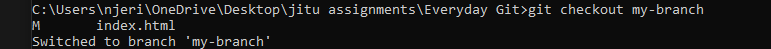
Switching active branches
first switch to the main branch, then use the git merge command followed by the name of the branch you want to merge.
The commands are:
git checkout master
git merge my-branch
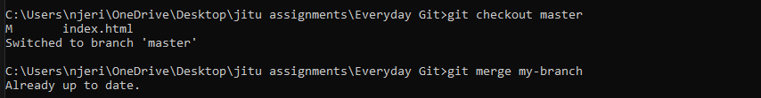
Merging a branch
To delete a branch in Git, you can use the git branch -d command followed by the name of the branch you want to delete.
Run the command:
git branch -d "branch name"
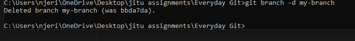
Deleting a branch
In conclusion,Git and GitHub revolutionize software development by providing robust version control, collaboration, and project management capabilities. Git facilitates efficient code tracking, branching, and merging, while GitHub enhances collaboration with pull requests, code reviews, and issue tracking. Together, they empower developers to streamline workflows, improve code quality, and accelerate software delivery in modern development environments.
If you enjoyed this blog,you can reach out to me through njerivictory52@gmail.com to ask for more blogs.